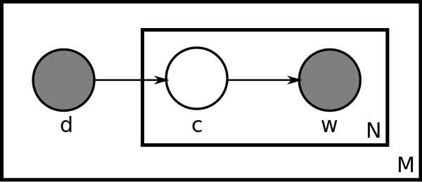

Fundamentals on topic modeling
While the tf-idf technique, which we went through in the past post, is very efficient for extracting features that are discriminative to the documents, it suffers from several drawbacks and limitations.
- Straight feature extraction results in high dimensional and sparse feature spaces. With very conservative filtering parameters we came out with almost 5000 features describing our corpus of 2000 documents. Analyzing matrices of such size always comes always at high computational costs. Furthermore, in the field of machine learning, algorithms usually involve iterative training algorithms, that enhance the computational cost and might also be prone to overfitting. Dimensionality reduction is first and foremost a matter of efficiency. How could the input space be as small as possible while being the most descriptive and discriminative possible?
- Sparsity in itself is also a problem when computing cosine similarity (dot product) between documents in their vector space representation. Indeed, since the number of features in a single document is far off the total amount of features, the non-zero components are very rare. In the end, the probability to find common non-zero components in two document vectors is low.
- Sole feature extraction completely flattens the documents in terms of series of words or n-grams. These feature have no inner relationships. In natural languages, the reality is the opposite. Indeed, words do have relationships with each others, in terms of syntax but also in terms of topics. In addition to that polysemy and homonymy is very important. Polysemy is the fact that single words can be related to different meanings and topics. When not taken into account it leads to overestimating the similarity between documents. Similarly homonymy is the fact that several words can refer to the same meaning, and therefore lead to an underestimation of the true similarity between documents.
For overcoming these limits, researchers have come with solution that must be operated once features have been extracted and before performing comparisons and classification tasks on the documents. This is the object of topic modeling.
Latent semantic indexing (LSI)
The first dimensionality reduction technique, and the easiest to understand and implement as well, is the latent semantic indexing (LSI). It consists in using a singular value decomposition of the documents-terms matrix. Thus a linear subspace in the TF-IDF high dimensional space is found, which better captures the internal relationships between features. The singular value decomposition matrix, truncated to reduce to output space, known as the laten tspace, to around 300 dimensions. This allows to define new features which are linear combinations between the features of the input TF-IDF space.
The components of the features in the can be positive and negative. Within a given feature, the highest positive components represent the TF-IDF features which at best describe the topic, while the highest negative components represent the TF-IDF features that are the most repulsive to that topic.
LSI is very fast, and requires a low computational time. The algorithm is based on the Singular Value Decomposition of the TF-IDF matrix followed by a normalization. The SVD matrix is truncated to the size of the required feature space. Two matrices are then available: the documents-topics matrix and the topics-features matrix.
- The first one is the linear mapping from documents to topics, with M documents and K topics. This matrix is dense and maps each documents linearly to the set of topics. This matrix with positive components is becomining our input data for the classification task, as it thought to be more consistant to the actual content of the text.
- The second matrix is the linear mapping from the topics to the features, with N features and K topics. This matrix is used for retrieving the description of a topic, in terms of highest components.
Probabilistic Latent Semantic Indexing (pLSI)
Simple LSI have come with shortcomings. One immediate concern is the fact that features are linearly combined with positive and negative components. Negative components are difficult to interpret in terms of meanings for a topic.
A second issue is that the LSI technique is non-generative for documents-words co-occurences; changing the nature of one of the documents will change the full LSI matrix. From the perspective of building a web service, this is a really annoying issue, in that the analysis cannot be reused by previously unseen documents, and even if the document are slightly modified.
As it has been stated by Hofmann in is publication on pLSI LSI is unable to capture polysemy of the features. "The coordinates of the of a word in the latent space can be written as a linear superposition of the coordinates of the documents that contain the word". The fact that a word could have different meaning in different documents cannot be explained by this superposition model.
Hofmann et al. have thus built a technique close to the latent semantic analysis model tackling these issues more seriously. The pLSI model adds a latent variable related to each single occurrence for a feature. It is used to give information about the context of the occurrence, that is to say the other words also appearing in the document. This helps accounting for polysemy. For instance, consider the word python. A first common sense is the snake, and a second possible meaning is the programming language. Given the other words co-occurring in the same document, it can be inferred whether the sense of the occurrence is the snake - for example when the word 'snake' is also in the document, or the right meaning is the programming language. In the last case, words like 'program', 'computer' or 'java' are likely to be present.
A common representation of this algorithm is given in the following figure, found in the Wikipedia article about pLSI. This is a plate notation where the relationships between variables are displayed. 
d is the document index variable. For each of the M documents, a word's topic c is extracted with a distribution over the N words w present in the full corpus. Using this notation, the co-occurrences are calculated in terms of probabilities P(w,d). These probabilities are decomposed in terms of conditional probabilities involving the latent variable c. The variable c is said to be latent in that it is not observable. In the application of topic modeling, the latent classes can be seen as topics as they create distributions of words likely to be present together in documents.
Latent Dirichlet Allocation
The implementation of topic modeling with the probabilistic Latent Semantic Indexing, was proved to have a serious limitation. It was shown by Blei, Ng and Jordan that this algorithm is not generative for documents. This means that the topic models which can be extracted for an analysis work poorly with un-seen documents. This is a serious issue in our perspective of classifying great amounts of documents: we need the analysis to be performed on a retricted set of documents while being able to apply the model to unseen documents whenever some are added to the corpus.
The plate notation of LDA is shown below from the Wikipedia article about LDA.